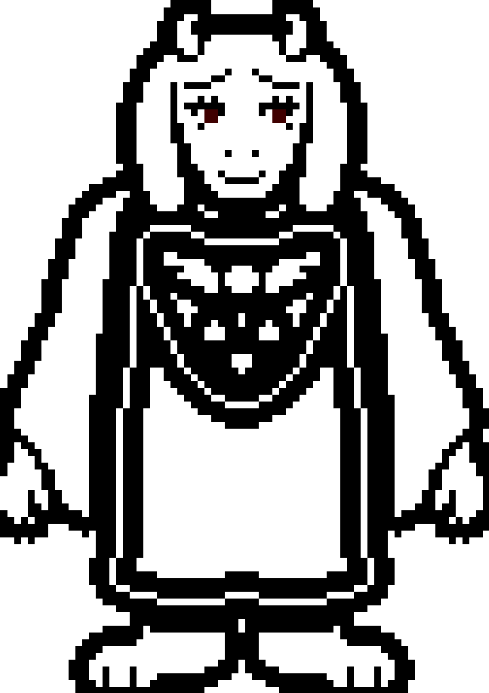

PACIFIST ENDING
Jalur Pacifist tercapai jika pemain tidak membunuh satu pun monster dan menyelesaikan konflik dengan cara damai. Frisk, sang protagonis, menjalin hubungan baik dengan semua karakter utama, membantu mereka mengatasi masalah pribadi, dan menemukan cara untuk membebaskan monster tanpa pengorbanan. Ending ini penuh harapan, memperlihatkan kebahagiaan dan kebebasan para monster, sekaligus memberikan pesan tentang kekuatan empati dan komunikasi.
Syarat:
- Jangan membunuh satu pun monster sepanjang permainan.
- Gunakan opsi ACT dan MERCY untuk menyelesaikan pertarungan secara damai.
- Bangun hubungan baik dengan karakter utama (Toriel, Sans, Papyrus, Undyne, Alphys, dll.).
- Kunjungi True Lab untuk menyelesaikan latar belakang cerita Alphys.
Cerita:
- Setelah membangun hubungan baik dengan semua karakter, pemain mengetahui bahwa monster tidak perlu dikorbankan untuk menghancurkan penghalang yang memisahkan dunia monster dan manusia.
- Frisk (karakter pemain) membantu para monster mendapatkan kebebasan tanpa ada korban.
- Ending ini sangat emosional karena semua karakter hidup bahagia, dan Frisk dianggap sebagai pahlawan.
Pesan:
- Ending ini menekankan pentingnya empati, komunikasi, dan kerja sama.
